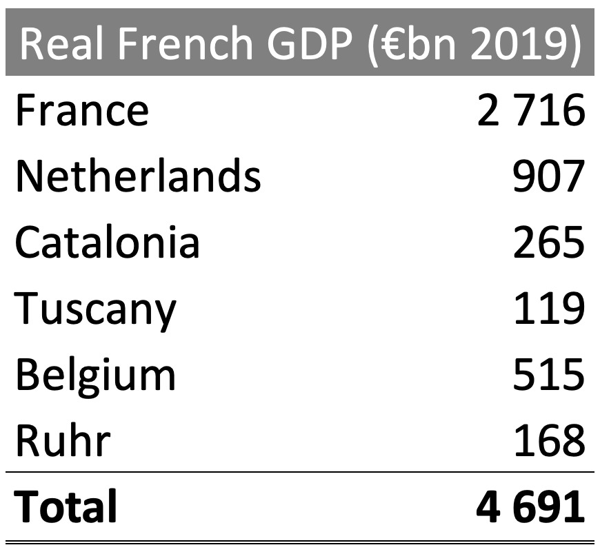

Historians refer to Napoléon’s Empire as the “First French Empire”, despite France having colonial possessions from the 17th century onwards. At its peak in 1811, much of western Europe was ruled directly by Napoléon or by a Bonaparte family member. Several of Napoléon’s brothers and sisters were appointed as royalty throughout Europe, with his brother Joseph made ruler of Spain. Napoléon had enlarged France to include Belgium, Holland, parts of Germany and the Italian coast, extending to Rome. He also forged alliances with Austria, Russia, Sweden, Denmark and a reduced Prussia,in addition to creating puppet nations and dependent states, such as the Confederation of the Rhine and the Grand Duchy of Warsaw.
